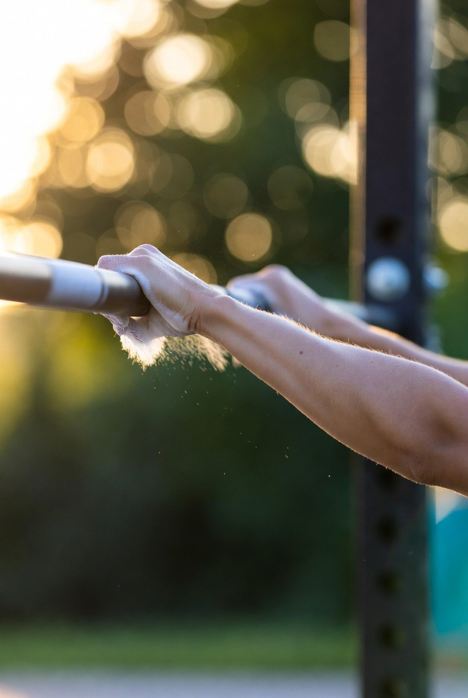
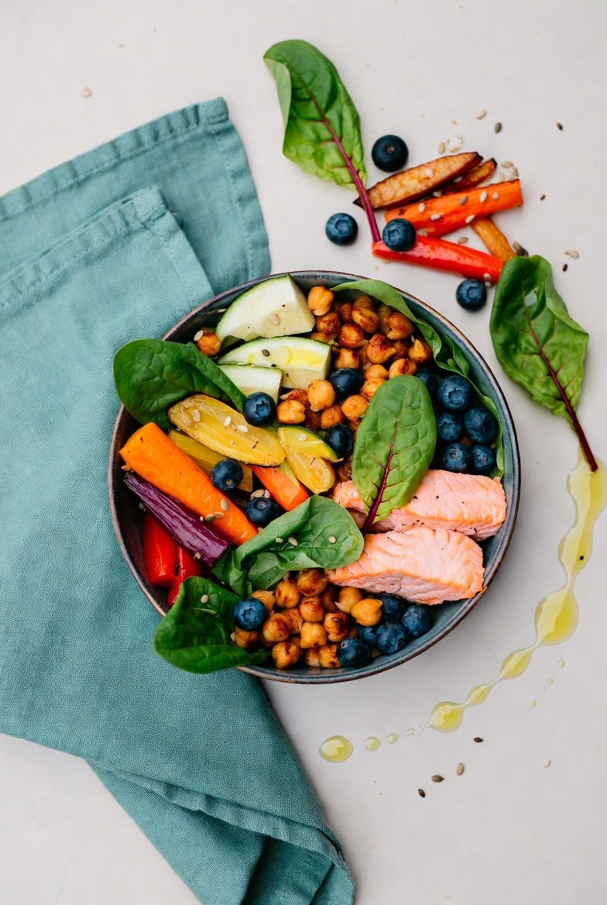
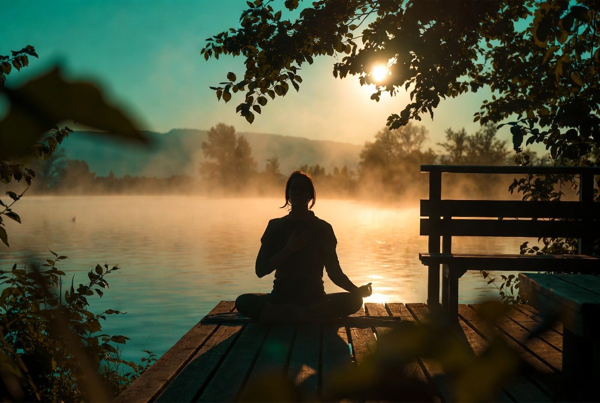
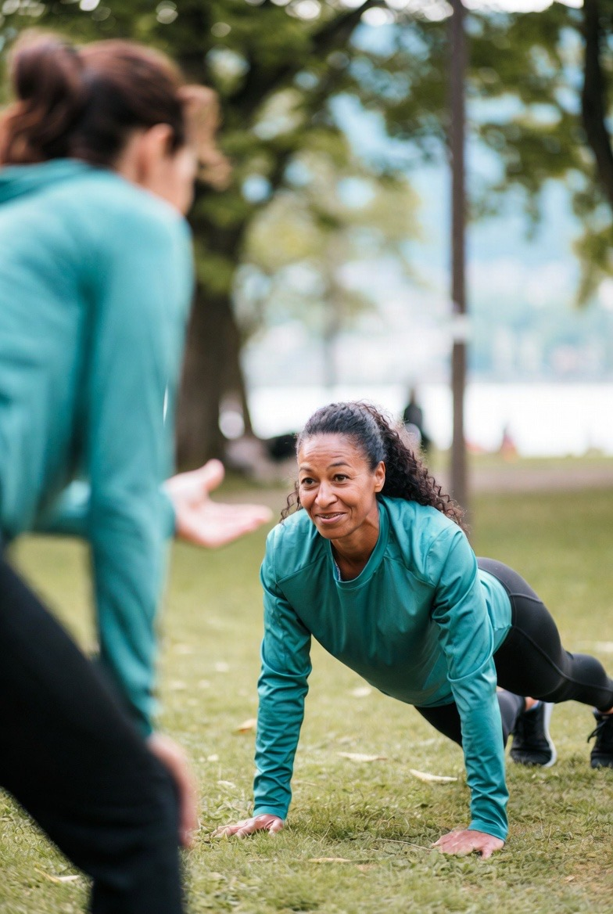
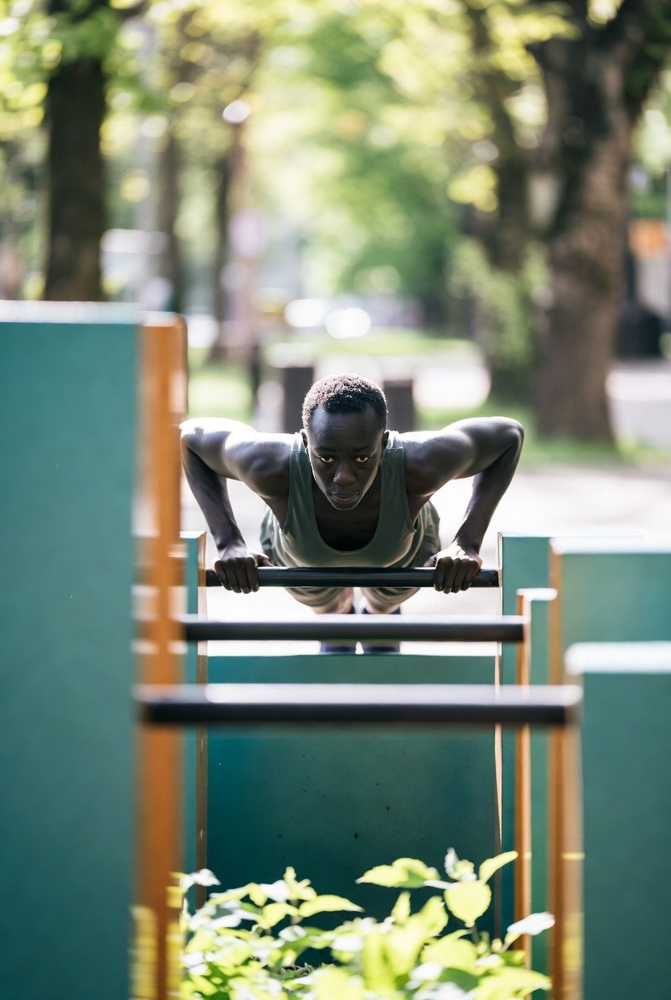
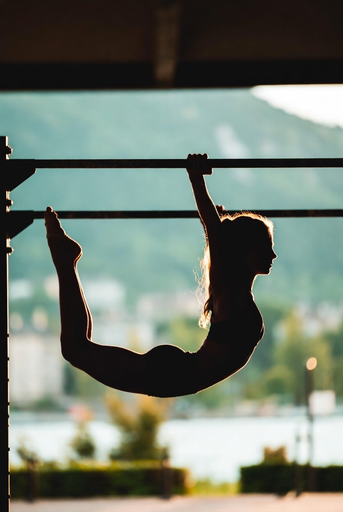
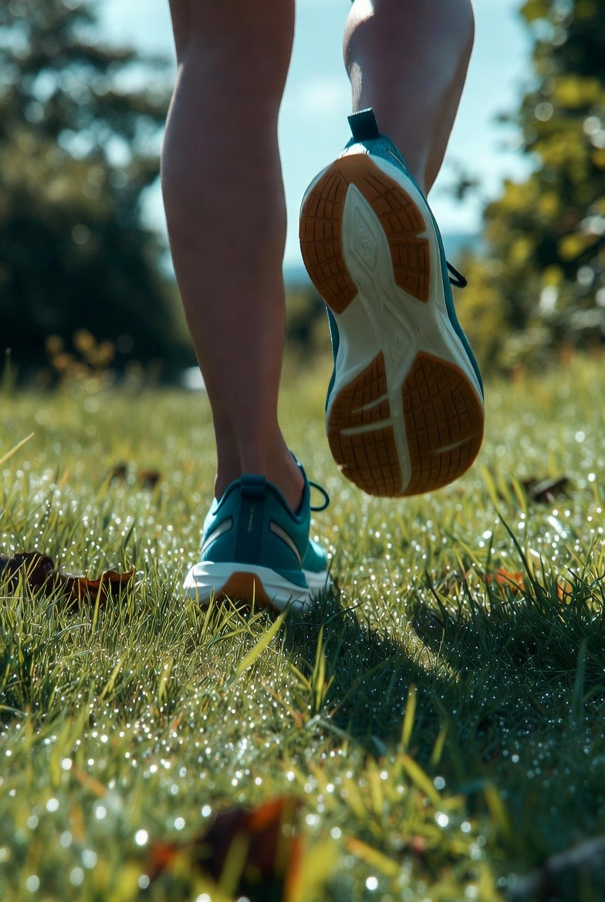
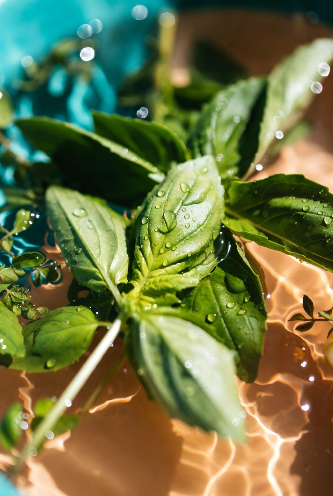
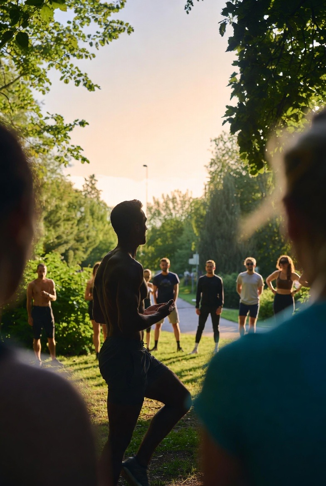
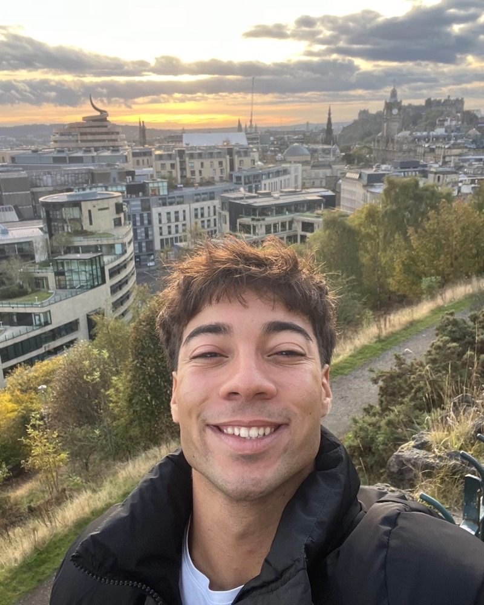

Le corps
Bouger avec justesse
La force du poids de corps, en pleine nature.
Calisthénie multiniveau, calibrée sur votre phase.
Calisthénie en plein air, alimentation immuno-métabolique et respiration : une méthode complète et progressive, portée par la science ORIM™, pour un corps fort et un esprit clair.
Trois axes qui se répondent, en complément des ateliers collectifs.

La force du poids de corps, en pleine nature.
Calisthénie multiniveau, calibrée sur votre phase.

Des couleurs dans l'assiette, de la vitalité dans le corps.
Un suivi alimentaire personnalisé, scoré par l'Indice ORIM™.

Retrouver le calme, même au cœur de l'effort.
Cohérence cardiaque, respiration et méditation guidée.
La calisthénie ORIM avance par étapes.



Surcharge progressive, autorégulation par l'effort ressenti.
Vous vous levez plus léger.
Plus de force, plus de mobilité.
Le souffle qui ralentit.
Une énergie collective.
Vous serez parmi les premiers membres du Pôle.
Cinq questions pour découvrir votre niveau.
L'accès aux séances du Pôle se fait par l'adhésion à l'Association ORIM.
Cette activité physique encadrée a une visée préventive et éducative ; elle ne constitue en aucun cas un avis médical.
À Genève, le Pôle Sport, c'est un collectif qui s'encourage.
Devenir membre



Passionné de calisthénie et de mouvement naturel, Ismael met son énergie au service de chaque membre.
Faites votre bilan gratuit ou rejoignez dès maintenant l'Association ORIM.